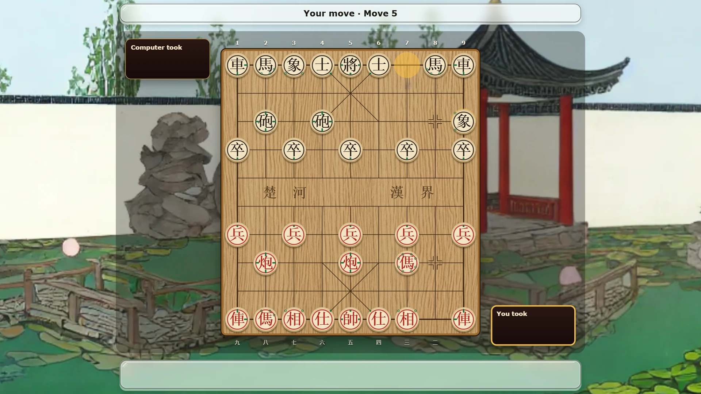
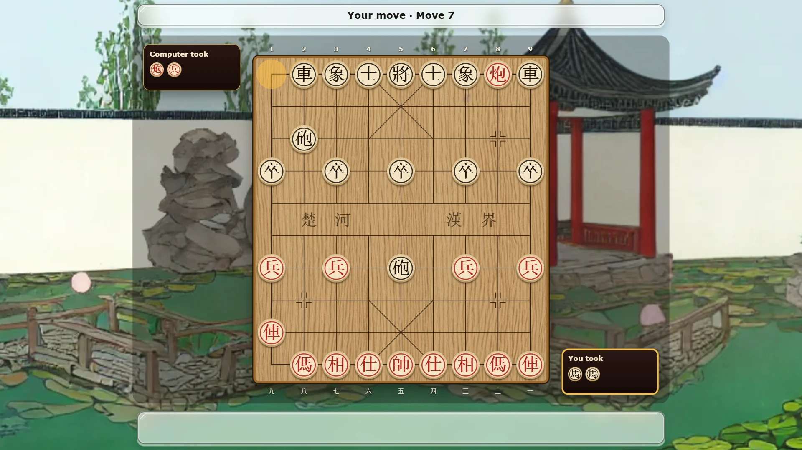

Xiangqiwise — play xiangqi online free
Xiangqi is Chinese chess. Two players, Red and Black, move round pieces across a board, and the game ends when one general is trapped. The pieces stand on the points where the lines cross, not inside squares. A river runs across the middle, each general lives in a small palace, and a piece called the cannon captures by jumping. Xiangqiwise plays it in the browser, against the computer or a friend.


The board and the pieces
The board has nine lines one way and 10 the other, so it has 90 points. The open band across the middle is the river. On each side, a box of nine points marked with an X is the palace, and the general and his two advisors may never leave it.
Each player starts with 16 pieces: one general, five soldiers, and a pair each of advisors, elephants, horses, chariots and cannons. They are flat wooden discs with a character carved on top. Red's characters are red and Black's are black, and Red always moves first. Most pieces have a different character for each side, as the table shows.
If you do not read the characters yet, turn on the move guide. It marks each piece with small dots for the points it can step to and lines for the directions it can slide, so you can play your first game without learning a single character.
How the pieces move
| Piece | Red / Black | How it moves |
|---|---|---|
| General | 帥 / 將 | one point along a line, inside the palace |
| Advisor | 仕 / 士 | one point along a diagonal, inside the palace |
| Elephant | 相 / 象 | two points diagonally, never across the river |
| Horse | 傌 / 馬 | one point straight, then one point diagonally outward |
| Chariot | 俥 / 車 | any distance along a line |
| Cannon | 炮 / 砲 | moves like a chariot, but captures by jumping |
| Soldier | 兵 / 卒 | one point forward; once over the river, also sideways |
Soldiers never move backwards, even after they cross. Every piece captures by moving onto the point of an enemy piece, except the cannon.
The cannon and the three blocks
The cannon slides like a chariot when it moves. To capture, it needs exactly one piece standing in its path to the target, of either colour, and it jumps over that piece to land on the target. Players call it the screen. A cannon with no screen threatens nothing, and a cannon with two pieces in front of it is blocked.
Three other rules shape most games. A horse is blocked when a piece stands on the point next to it in the direction it wants to go, so you can hobble a horse by standing on its leg. An elephant is blocked when the point in the middle of its diagonal is taken, the elephant's eye. And the two generals may never face each other along an open line with no piece in the way. A move that would leave them facing is not allowed, which makes your own general a long-range piece in the endgame.
How a game ends
You win by checkmate, when your opponent's general is attacked and has no way out. Unlike chess, a player who has no legal move at all also loses, so there is no stalemate draw. Either side can resign.
If the same position, with the same side to move, appears for the third time, the game is a draw. The exception is perpetual check: if every move one player made through that repetition was a check, that player loses. Tournament rules also punish a perpetual chase of an undefended piece, but that call needs an arbiter, and Xiangqiwise does not judge it. A game is also drawn after 60 moves each with no capture, or after 300 moves in all.
Two ways to play
Against the computer you choose one of three levels. Easy looks one move ahead and picks from the stronger half of its moves, so it leaves pieces hanging. Medium looks two moves ahead and chooses among its best three. Hard searches three moves deep and plays the best move it finds. You can play Red and move first, or play Black.
Friend online opens a room for two. Send the link or read out the six-letter code, and your friend joins in their browser. Others can follow a game from a watch link. Nobody needs an account.
Tips
Bring a chariot out early, because it is the strongest piece and does little from the corner. Before each move, look along every line where a cannon sits and count the pieces in front of it: moving a piece can hand an enemy cannon its screen. Keep the advisors and elephants near your general, since they are the only guards that cannot wander off. The river's two inscriptions, River of the Chu and Border of the Han, point back to the Chu-Han War, when two rival kingdoms split China along a real border.
More board and card games
For the Western cousin of xiangqi, try Rookwise (chess). For the Japanese one, try Shogiwise, where captured pieces come back into play. For a quick two-player board game, try Gomowise (Gomoku, five in a row).
More like this: 2-player games online · Multiplayer browser games · Board games with friends